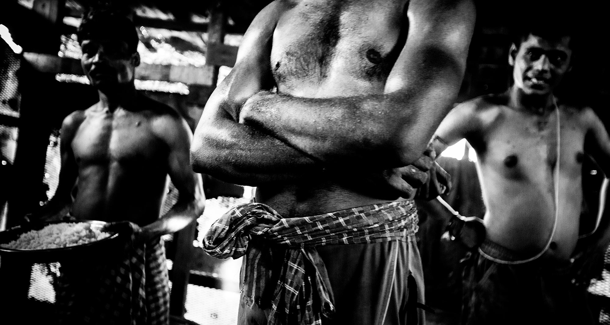

In Alang, the world's biggest shipbreaking area, more than 90% of the workers are poor and unskilled migrants from Northern India: Orissa, Bihar and Uttar Pradesh
.
Poor, non-qualified, immigrant. This is the identikit of the average worker on the shipbreaking yards in Alang, Gujarat. The biggest site of shipbreaking in the world lives thanks to the employment of tens of thousands of workers who come from the poorest regions of India: Bihar, Orissa, Uttar Pradesh. Arkid Jena, 36, is one of them. He was born in a small village in Orissa, but he has been living and working in Alang now for 22 years, on plot number 25. He started when he was 14 and has never stopped. He goes home once a year to see his family, his wife and children, because he cannot take many days off. There are more than 30.000 immigrant workers just like him. They are the backbone of this economy that counts, along ten kilometres of coast, in Alang, 167 shipyards, all dedicated to the demolition of ships: cargo ships and oil tankers, the majority of which come from western countries. They live in wooden and metal sheet shacks, one leaning against the other, no toilets, no electricity, no water, and for which they even have to pay a monthly rent of about 500 Indian rupees. “The Gujarat Maritime Board, the institution that manages all activities in Alang, has created some dormitories for the workers, to move them from the shacks – explains Vidyadhar Rane, general secretary of the one and only union that is active in Alang – but it is a pity that the number of places available, one thousand, is nowhere near enough to cover the needs of the thousands of immigrant workers. Moreover, the buildings have been placed several kilometres away from the shipyards where these people have to go every morning under a boiling hot sun because there is no public transport.”
Shaving on a Sunday morning in Alang
They eat and sleep on the floor, and they share everything. Even the salary. Exactly, because if one of them gets sick, or hurts himself, the employer doesn’t pay him so the others have to face up to his needs. «For example, he hurt his leg – says Arkid pointing at his shack-neighbour with a smashed leg – He hasn’t been working for a week and will not be able to get back for a while. He is not earning any money, so we have to support him. Without solidarity we could not survive». A solidarity born also from the fact that here, in this part of the camp where Arkid and the others live, they all come from the same village of Orissa. And the same goes for those coming from Uttar Pradesh or Bihar, small communities that in the course of the years have attracted entire villages from the poorest regions of India. Men, mostly in their thirties, but also many youngsters, whose age remains uncertain. Tunaka is 19, and has now been here in Alang for two years. That means he came here as a minor. On paper, minor labour is forbidden in the shipyards, yet there are many very young boys who start working when they are still minors, often recruited to substitute older workers, for short periods. This is for a very simple reason: they cost less. They are less qualified, younger, more agile and also are less pretentious. They work on several yards, especially the smaller ones which cannot invest, or do not want to, in the sustainability of this industrial sector, as is required by International Organizations. “It is hard work, but we have no other choice – Tunaka tells us. Back home we have no opportunities and we have to feed our families.”
Migrant workers from Orissa in their small village nearby Alang’s main road
Accidents happen quite often here in the shipyards, and they are difficult to monitor. Deaths, even though decreasing slightly, continue to be one of the most tragic side-effects of this activity. “In July, a worker from plot number 69 died, smashed under a piece of a ship which fell from high up – says Arkid – The employer awarded his family 750.000 rupees in damages”. Around ten thousand euros, that is what the life of a worker is worth in Alang. And despite the progress made with reference to security on some of the yards that buttress the coast of this side of Guarajat, there are still many, too many, in which the working conditions remain extremely dangerous. Just walking past the gates of these yards one can easily spot workers managing blowtorches and large pieces of metal with their bare hands and wearing flip-flops. Thirty thousand workers, even fifty thousand during the periods of large influxes of ships, and only two hospitals. “One of the major issues for the workers in Alang is the access to medical treatment – says Vidyadhar Rane - The only two hospital structures in the area are the Red Cross Hospital and a private hospital with only twenty eight beds. Completely inadequate infrastructures to support the number of workers who are often injured on the work-site, sometimes very seriously”. The nearest hospital able to offer the necessary treatment in cases of serious accidents, is that in Bhavnagar, more or less sixty kilometres away which means one and half hours of driving from the shipbreaking yards. A distance that often reveals itself to be fatal for the workers of Alang.
A bowl of rice is usually what the workers eat during the day
